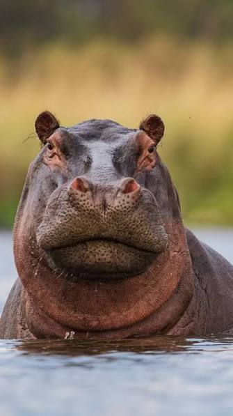

Nilski Konj
Nilski konj (lat. Hippopotamus amphibius), primjerenije vodenkonj ili vodeni konj, kljovaš je porijeklom iz Afrike. Filogenetska istraživanja upućuju na to da su vodenkonjima najbliži živući srodnici kitovi, a ne kopneni preživači i svinje

Prehrana
- Divlje voće
- Kratka trava
- Močvarno i vodeno bilje
- Poljoprivredni usjevi
Za pronazak stranice u web pregledniku upišemo: "what do hippos eat in the wild" i izaberemo stranicu Africa Safaris